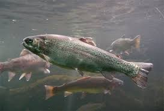
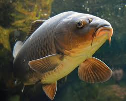
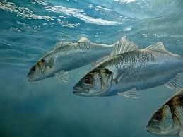

Kafshët Ujore
Kafshët ujore janë ato specie që jetojnë në dete, lumenj, liqene dhe laguna. Shqipëria ka një pasuri të rëndësishme ujore falë bregdetit, lumenjve dhe liqeneve të saj.
Në këto mjedise gjenden peshq, zogj ujorë dhe specie të tjera që lidhen ngushtë me jetën në ujë. Kafshët ujore kanë rol të rëndësishëm në ruajtjen e ekuilibrit natyror dhe të biodiversitetit.

Trota
Një peshk i njohur që gjendet në ujëra të pastra dhe të freskëta.

Krapi
Një specie e njohur peshku që jeton në liqene dhe ujëra të qeta.

Levreku
Levreku është një peshk i njohur që jeton në ujërat e detit Adriatik dhe Jon, dhe është shumë i vlerësuar për mishin e tij.